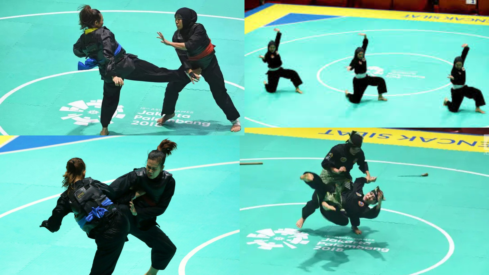

Sejarah Ikatan Pencak Silat
Awal Pembentukan
Sejarah IPSI bermula pada 18 Mei 1948 di Surakarta, Jawa Tengah, sebagai wadah organisasi untuk mempersatukan dan membina berbagai aliran pencak silat di Indonesia pasca-kemerdekaan. Didirikan oleh tokoh-tokoh pencak silat dan pejabat pemerintah, tujuan utamanya adalah melestarikan, mengembangkan, dan meningkatkan kualitas pencak silat sebagai budaya bangsa, serta mempererat persaudaraan antar perguruan silat.
Latar Belakang Berdirinya IPSI
Sebelum IPSI berdiri, sudah ada upaya-upaya untuk mempersatukan perguruan silat, seperti pembentukan Gabungan Pencak Mataram (GAPEMA) di Yogyakarta tahun 1934 dan kemudian Gabungan Pentjak Seluruh Indonesia (Gapensi) tahun 1947.
Peran Tokoh Pendiri
Salah satu tokoh kunci dalam pendirian IPSI adalah Mr. K.R.M.T. Wongsonegoro, yang memimpin konferensi pembentukan IPSI dan menjadi ketua umumnya.
Tujuan Utama
IPSI bertujuan mempersatukan, membina persaudaraan, dan kesetiakawanan antar perguruan pencak silat.
Standardisasi
IPSI juga berusaha menstandarkan sistem silat nasional, meskipun upaya ini terkadang menghadapi kesulitan karena perbedaan pendapat antara pendekar tradisional dan mereka yang mengedepankan pencak silat sebagai olahraga.
Perkembangan Internasional
Pencak silat pertama kali dipertandingkan di Pekan Olahraga Nasional (PON) 1973, dan kemudian masuk dalam SEA Games sejak 1987 serta Asian Games 2018. Dengan sejarahnya yang panjang, IPSI terus berperan aktif dalam melestarikan dan mengembangkan pencak silat sebagai bagian dari warisan budaya bangsa Indonesia, serta sebagai olahraga yang mendunia.